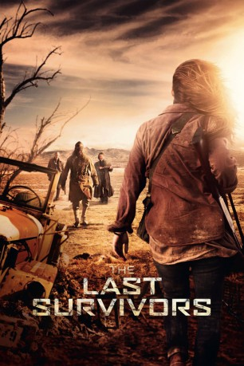

#8396 The Last Survivors
 
 IMDB-Wertung: 5.4 / 10
IMDB-Wertung: 5.4 / 10  Metascore: 0
Metascore: 0 
In der nahen Zukunft ist Wasser zum kostbarsten Gut geworden. Seit nunmehr einer Dekade ist kein Tropfen Regen mehr gefallen und es existiert kaum eine Quelle, die noch nicht versiegt ist. Für die durstenden Menschen im fast vollständig ausgetrockneten Oregon steht tagtäglich der Kampf ums nackte Überleben auf dem Spiel. Dabei gilt es vor allem, die wenigen Wasserressourcen vor dem gierigen Wasserbaron zu verbergen, der er sich zum Ziel gemacht, die völlige Kontrolle über die letzten Quellen zu erlangen und alle Überlebenden der Dürreperiode zu beseitigen. Einzig die 17-jährige Kendal scheint genug Mut zu besitzen, um sich ihm in den Weg zu stellen.
Jahr: 2014
Dauer: 94 Minuten
FSK: 16
Land: USA Studio: Dark Sky FilmsTonspuren: DTS - ,
Untertitel:
Auflösung: 1080p (1920x808) Größe: 5580 MB
Genre: Action, Thriller
Regisseur: Tom Hammock
Drehbuch: Jacob Forman
Soundtrack: Craig DeLeon
Darsteller:
 Haley Lu Richardson als Kendal
Haley Lu Richardson als Kendal Booboo Stewart als Dean
Booboo Stewart als Dean Max Charles als Alby
Max Charles als Alby- Nicole Arianna Fox als Brooke
- Michael McCartney als Cadiz
- Barbara Crampton als Grace
 Michael Massee als Walker
Michael Massee als Walker Rena Owen als Claire
Rena Owen als Claire Leo Lee als Judas
Leo Lee als Judas Michael Welch als Gabriel
Michael Welch als Gabriel Jon Gries als Carson
Jon Gries als Carson- Jacqueline Emerson als Skye
- Casey Adams als Chance
- Neal Polister als Thomas
- Veronica Sixtos als Azalea
- Fivel Stewart als Pia
- Zack Duhame als Hunter / Killer 'Corpse'
- Billy Federighi als Doug
- Adam Wingard als Compound Soldier
 Simon Barrett als Compound Soldier
Simon Barrett als Compound Soldier- Andrew Spieler als Water truck / compound worker
- Dan Hooker als Water truck / compound worker
- Seth Caplan als Farmer
- Brittany Falardeau als Farmer
- Sheridan Crist als Mackie
- Tooru Nakahira als Simon
- Sarah Pott als Captive Girl
- James Smale als Captive Man
- Jedediah Fossil als Long Longford / Compound worker
- Chris Harding als Ford Longford
- Chris Matson als Nighthawk Farmer
- Lorenzo Mezzacappa als Vagrant Farmer
- Micah Brenner als Compound Soldier
- Bruce G. Hammock als Water truck / compound worker
- Seong-Jin Moon als Water truck / compound worker
- Alex Gadd als Water truck / compound worker
- Corky Cronin als Water truck / compound worker
- Gene Litvinoff als Water truck / compound worker
- Shane Leary als Additional Hunter / Killer
- Eric A. Reid als Additional Hunter / Killer
- Zachary Witherspoon als Additional Hunter / Killer
- Brett Snider als Additional Hunter / Killer
- Dimitri Loginowski als Additional Hunter / Killer
- Bruce Hammock als Farmer
- Lassie Hammock als Farmer
- Michael J. Wilson als Farmer
- Ed Noon als Farmer
- Ayo Griffin als Farmer
Datei: X:\2014(G-M)\Last Survivors, The (2014, FSK16, 1920x808).mkv seit 28.02.2018
Festplatte: HD 2013(I-Z)-2014(A-Z)
 Es gibt insgesamt 136 Filme in der Gruppe '2014(G-M)'
Es gibt insgesamt 136 Filme in der Gruppe '2014(G-M)'